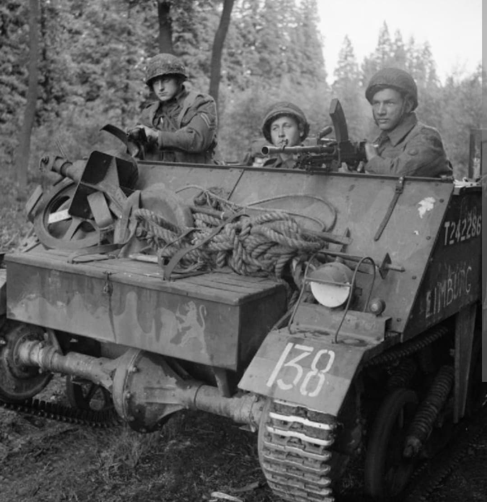
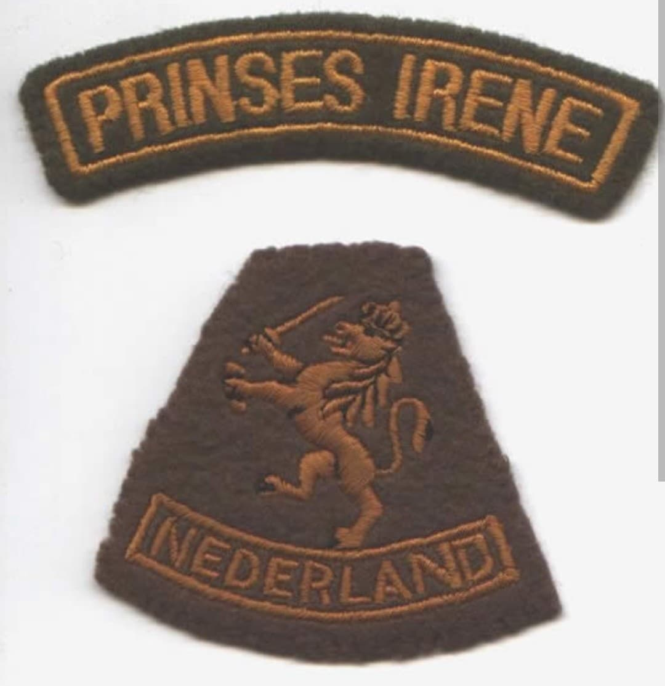
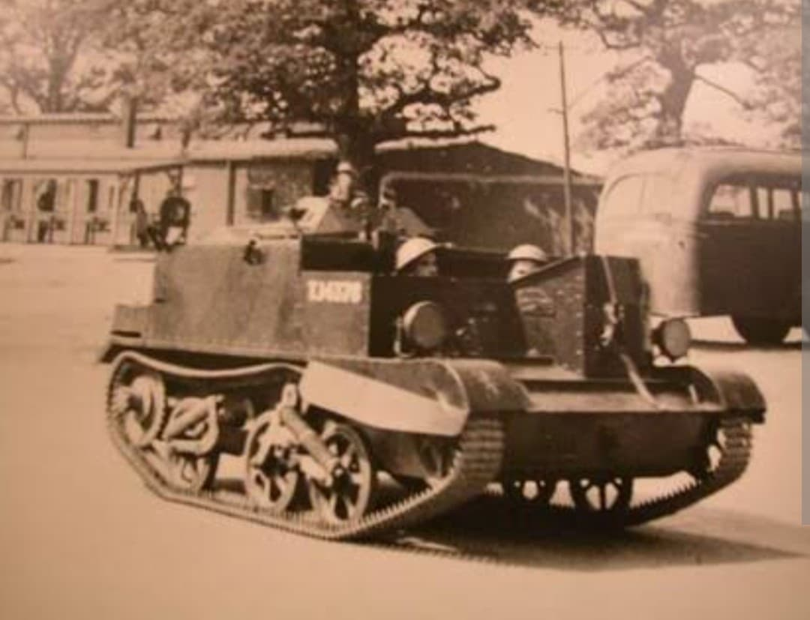

La force libre des Pays-Bas : du débarquement en Normandie à la libération de Tilbourg et des terres néerlandaises

La Brigade Princesse Irène (en néerlandais : Koninklijke Nederlandse Brigade Prinses Irene) est la principale unité militaire régulière des Pays-Bas libres constituée au Royaume-Uni durant la Seconde Guerre mondiale.
Composée de soldats néerlandais évacués en mai 1940, de volontaires de la diaspora et de sujets néerlandais venus du monde entier, cette brigade mécanisée a combattu avec panache aux côtés des forces alliées sur le front de l'Ouest, marquant le retour triomphant des forces nationales sur le sol de leur patrie occupée.
Créée en Grande-Bretagne en août 1941 sous l'égide du gouvernement néerlandais en exil et de la reine Wilhelmine, la brigade est baptisée du nom de la princesse Irène, née en exil. Elle est placée sous le commandement du colonel **A. C. de Ruyter van Steveninck**.
Son insigne d'épaule distinctif arbore le nom de la brigade sur fond tricolore ou aux couleurs de la maison d'Orange, symbole de fidélité à la couronne et de la reconquête des libertés nationales.

Après des années d'entraînement intensif en Angleterre, la brigade débarque en Normandie le 6 août 1944 au sein de la 6e division aéroportée britannique, puis est rattachée à la 1ère armée canadienne.
Ses hommes s'illustrent lors de violents combats dans la région de Pont-Audemer et de la Risle, subissant leurs premiers tués au combat mais faisant preuve d'une bravoure remarquable saluée par les haut-commandements alliés.

À l'automne 1944, la brigade franchit la frontière néerlandaise pour participer à la libération de son propre pays. Elle joue un rôle clé dans la prise de la ville de **Tilbourg** en octobre 1944, accueillie dans l'enthousiasme général par une population en délire après plus de quatre années de joug nazi.
Elle participe ensuite à la sécurisation des secteurs de la Meuse et achève sa campagne victorieuse au printemps 1945, devenant le symbole vivant de la résistance et de la souveraineté retrouvée des Pays-Bas.
Page du Musée HOP WW2 – Section Unités & Divisions